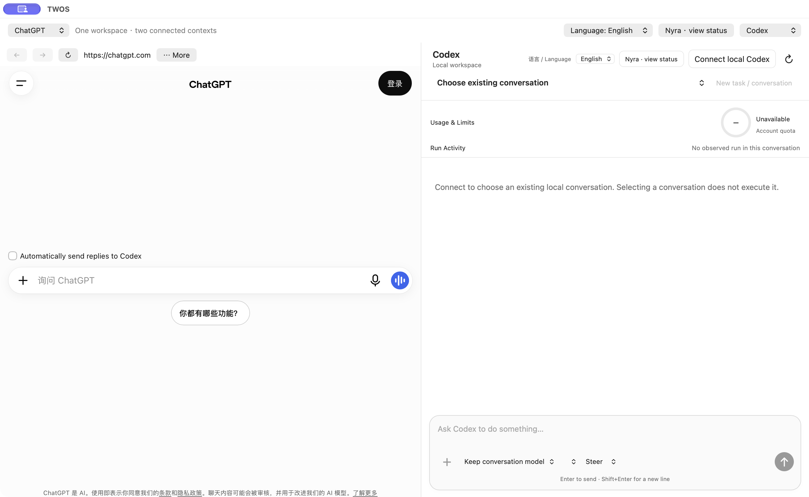
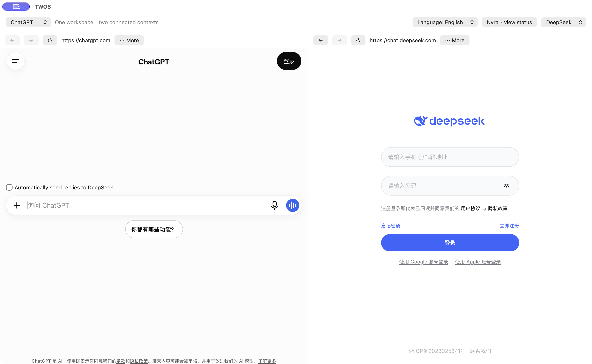
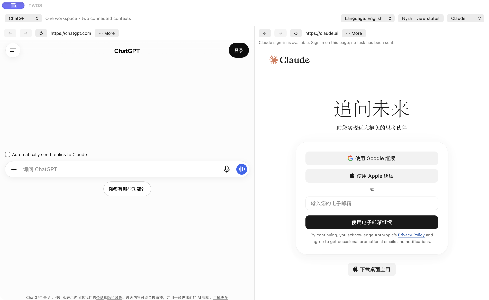
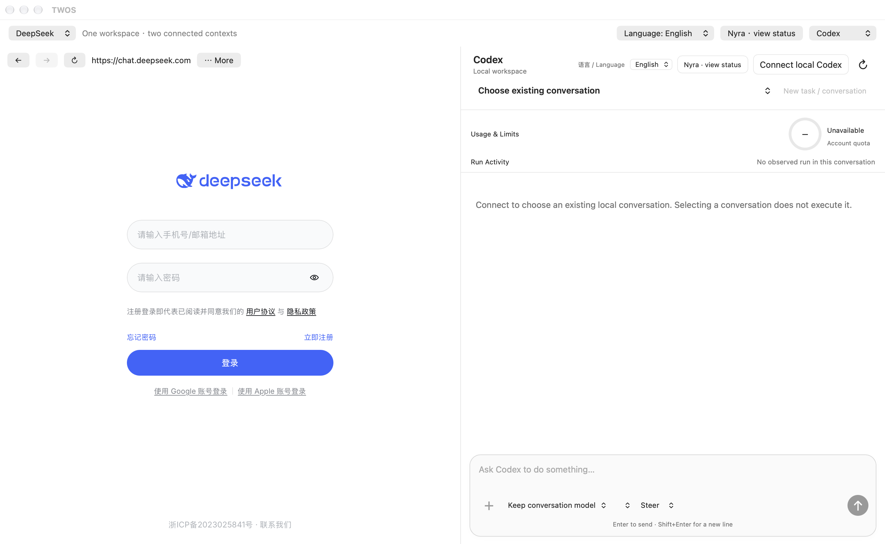
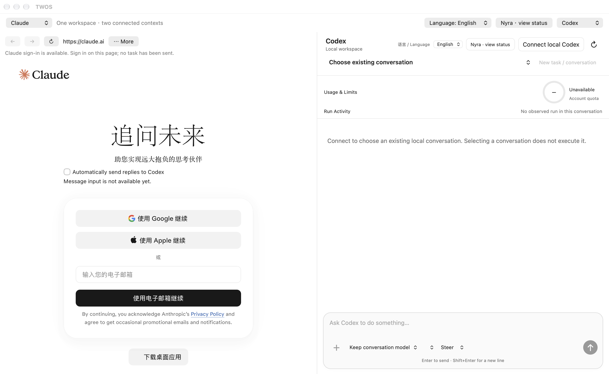
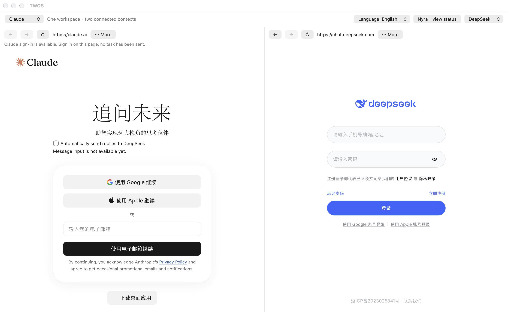

01 / DISCUSS
Use your chosen service
Open ChatGPT, Claude or DeepSeek and sign in directly on its official website. Each service keeps its own account, model options and limits.
Discuss an idea, send a complete reply to the other side, and continue from the result. Keep the destination and the next action in view.
Current public DMG: 1.0.9 · build 101.57 · Apple Silicon.
Mac App Store preparation is in progress. There is no App Store download yet.
Two service panes, a visible language switch, and local Codex controls in one macOS window.

Choose ChatGPT, Claude, DeepSeek or local Codex from the service selectors on either side. Use two website conversations to compare and refine ideas, or pair a website with Codex for local development. Each service keeps its own model choices, account and limits.
Actual TWOS 1.0.9 / 101.57 release captures, November 7, 2026. These are sign-in and disconnected starting screens, not examples of completed tasks. Click any image to inspect it. ChatGPT + Codex is shown above.

Compare approaches and send a selected complete reply from one conversation to the other.
View full-size screenshot
Develop an idea with one service and ask the other to review or extend it.
View full-size screenshot
Discuss with DeepSeek, then explicitly hand an approved task to local Codex in your confirmed workspace.
View full-size screenshot
Shape a task with Claude and follow its separately authorized local implementation in Codex.
View full-size screenshot
Keep two perspectives side by side and choose which complete replies cross between them.
View full-size screenshotWebsite pairs: send a complete selected reply manually, or enable automatic replies for a supported ChatGPT, Claude and DeepSeek pair. Either side can stop future sends. Login, verification, drafts and service limits can pause the exchange.
Pairs with Codex: local execution requires your installed, signed-in Codex, a confirmed workspace and the applicable approval. Website auto-send does not authorize commands or file changes. Choosing a service does not start a task.
These are the supported integrations shown here, not a claim that every model or arbitrary website supports automated handoff. TWOS provides its own Codex client; provider interfaces and availability can change.
Open ChatGPT, Claude or DeepSeek and sign in directly on its official website. Each service keeps its own account, model options and limits.
Send a complete selected reply to the paired destination. Choose attachments explicitly. Enable automatic replies only when you want the selected pair to continue.
Inspect delivery details and results. With your installed local Codex and a confirmed folder, follow execution and open, view or save the files it produces.
This is a workflow explanation, not a screenshot or a claim that every provider operation is always available. Login, verification, service changes and limits can pause a handoff.
Black & purple, Office, Gala, White blouse and Ruby gown. Choose a look from Nyra’s wardrobe in the app.
Actual outfit artwork used by the native app, not concept mockups. These are still portraits; animation, standing and reclining are available in the app. All five looks are included in the current public TWOS 1.0.9 / Nyra 1.0.6. Their artwork is unchanged from the preceding release.
Show the local desktop companion from TWOS. Switch outfits, use a transparent character stage, or enable short action voices. Sound starts muted.
Nyra observes minimal read-only task state and bounded active conversation titles. Show or hide the task labels, and click Nyra to return to the connected TWOS window. She cannot approve requests, execute commands or read message bodies.
Explore the independent Nyra appA web reply containing code is still a reply. Writing files requires a separate, authorized local execution path. Choosing a folder does not grant permission to read every file inside it.
TWOS provides its own client for the official Codex App Server protocol. It does not embed the full official Codex application interface.
New in 1.0.9: open an explicitly selected private-network HTTP dashboard in either Website pane. Invalid addresses stay editable with a specific reason; Cancel preserves the existing pane. HTTP is limited to the selected private/local host and port. Opening a page never starts a model task or shares its contents.
Preserved from 1.0.8: local Codex restores long conversations using compact history summaries. Expand Saved activity to read one bounded page at a time. A connection or history read never sends or replays a task.
Preserved from 1.0.7: connect to local Codex without blocking the workspace. Startup is cancellable, failures have bounded deadlines, and reconnect never silently replays a task. Nyra adds optional current-task labels and click-to-return to TWOS.
Preserved from 1.0.6: automatic-send intent stays separate from waiting and reconciliation. Real pauses show a cause; either side’s Stop revokes future dispatch. Dedicated tests exceeded five round trips from each provider. The original first-round trigger was not reproduced, so no single cause is claimed for that incident. Inspect uncertain delivery before any retry.
The planned Mac App Store edition is free with no in-app purchases. Its availability, sandbox adaptation and review are not complete.